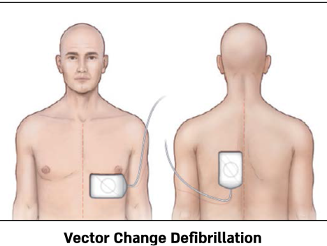
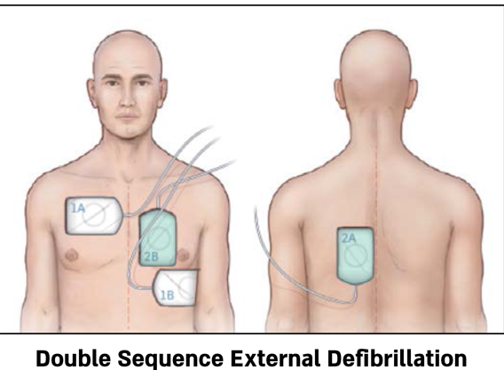

הפרוטוקול מגיע אחרי פרוטוקול גישה כללית למטופל ופרוטוקול דום לב ונשימה
במבוגר.
השוק החשמלי
- מכשיר LP-12
- מכשיר Corpuls
- הקפד על מיקום נכון של מדבקות הדפיברילציה.
- לאחר שלושה שוקים חשמליים ללא שינוי בקצב עבור ל־Refractory VT/VF
מיקום המדבקות
- מדבקה אחת מתחת לקלוויקולה ימין, השנייה בקו אקסילרי שמאל
- (צד שמאל של בית החזה, קו האמצע בין השחי לצלעות).
- שים לב שהמדבקות לא נוגעות זו בזו, ושאין הפרעה ע"י שיער יתר או נוזלים.
- מיד לאחר שוק ממשיכים בעיסויים.
מתן תרופות
- יש עדיפות למתן תוך-ורידי של תרופות במהלך החייאה.
- במקרה של כישלון, יש להתקין IO ולתת את התרופות תוך־גרמית.
- אדרנלין
- מנה ראשונה תנתן רק לאחר שני סבבים
- מינון I.V. כל 3-5 דקות 1mg. (1 אמפולה) יש לתת מיד שטיפה 20cc סליין.
- מינון E.T. 3mg (3 אמפולות), מהולים ב־5cc סליין.
- אמיודורון
- מנה ראשונה 300mg (2 אמפולות). מיהול 20cc סליין. לאחר 3 סבבי עיסויים.
- מנה שניה 150mg (1אמפולה) מיהול 20cc סליין. לאחר 5 סבבי עיסויים.
- מגנזיום סולפט
- מתן רק במקרה של טכיקרדיה רחבת קומפלקס. ופולימורפית (TDP)
- מינון 1-2gr מיהול ב־10-20cc סליין
- מתן ב־PUSH איטי.
- סודיום ביקרבונט
- אינדקציה למתן, עדות מוקדמת להיפרקלמיה או חמצת מטובלית
- מינון 1meq/kg
ROSC
- חזרת דופק מרכזי או פריפרי.
- עלייה חדה בערכי ETCO2 (לרוב ערכים מעל 40mmHg).
- אם נמוש דופק פריפרי יש למדוד לחץ דם.
- שקול צורך בטיפול תרופתי נוסף.
טיפול בגורמים הפיכים
- הרעלת אופיאטים -- מתן נרקן.
- היפוולמיה -- מתן נוזלים.
- היפותרמיה -- חימום הסביבה.
- היפוקסיה -- מתן חמצן בריכוז מרבי.
- היפרקלמיה או חמצת מטבולית -- מתן סודיום ביקרבונט.
- חזה אוויר בלחץ -- ניקוז חזה באמצעות מחט (NA).
זונדה
- הכנס זונדה למטופל שעבר הנשמה ממושכת ללא טובוס, ויש חשד קליני להתרחבות הקיבה.
עבור לפרוטוקול מתאים
- דום לב במבוגר PEA / ASYSTOLE
- פינוי מטופל לבית חולים תוך כדי המשך פעולות החייאה
- הימנעות מביצוע פעולות החייאה או הפסקתן
VT/VF עקשן (Refractory)
- הגדרה: ללא שינוי בהפרעת הקצב לאחר 3 מכות חשמל (כולל שימוש ב־AED).
- טיפול: החל מסבב רביעי. ביצוע דפיברילציה בטכניקה מתקדמת (VC או DSED).
- DSED (Double Sequential External Defibrillation)
- מתן 2 מכות חשמל עוקבות, בהפרש של 0.12msec, מ־2 מכשירים שונים המחוברים בוקטורים צולבים (ראה איור). זוהי הטכניקה המועדפת.
- Vector Change VC
- מתן מכת חשמל בוקטור ניצב לוקטור הרגיל (קרי -- כאשר מדבקה אחת מעל האפקס מלפנים והמדבקה השניה בנקודה מקבילה בגב מאחור -- ראה איור).


החייאה
- השוק הראשון ניתן מיד עם המעבר מפרוטוקול דום לב ונשימה
- בצע עיסויים במשך שתי דקות
- השג גישה ורידית
- אם אין התוויה לשוק שני אחרי שתי דקות
- בדוק האם ROSC. עבור לפרוטוקול ROSC
- אם לא, עבור לפרוטוקול מתאים.
- אם יש התויה לשוק תן שוק שני
- בצע עיסויים במשך שתי דקות
- תן אדרנלין כל 3-5 דקות
- שקול ניהול מתקדם של נתיב אויר
- אם אין התוויה לשוק אחרי שתי דקות
- בדוק האם ROSC. אם כן, עבור לפרוטוקל ROSC
- אם לא, עבור לפרוטוקול מתאים
- אם יש התויה לשוק תן שוק שלישי
- בצע עיסויים במשך שתי דקות
- תן אמיודורון ב־IV
- שקול צורך בטיפול תרופתי נוסף
- טפל בגורמים הפיכים
- חזור לבדוק אם יש התוויה לשוק ראשון והמשך שוב
שאלות חזרה